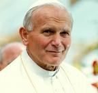
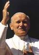
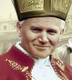
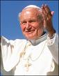

caos
moral e espiritual.
caos
moral e espiritual.
"BISPO DE ROMA"
Wojtyla
descobriu Roma ainda jovem, logo depois de ser ordenado sacerdote. O seu 
Logo no primeiro encontro com o Conselho Episcopal, anunciou que pretendia visitar as “suas” Paróquias. E assim aconteceu, no dia 3 de Dezembro de 1978, apenas 48 dias após a sua eleição, foi a San Francesco Saverio, no Bairro Garbatella, perto da região administrativa Eur.
Era a mesma Paróquia aonde ele ia todos os domingos no tempo de estudante. Um microônibus passava nos institutos eclesiásticos (ele se hospedava no Colégio belga) para transportar sacerdotes e seminaristas não italianos. Entre as 8 e 9 horas da manhã os deixava nas diversas Paróquias, onde ajudavam no ministério pastoral. Depois voltava para apanhá-los após as 12 horas. Padre Karol ia justamente à Igreja de San Francesco Saverio, onde, ainda falando com dificuldades o italiano, ouvia as confissões dos fiéis.

Após a homilia, João Paulo II convidou todos os casais a se darem às mãos e a renovarem ali, diante do Bispo de Roma, as promessas que trocaram mutuamente no dia do casamento. Muitos se surpreenderam com aquela agradável novidade! Mas na realidade, desde que era Bispo em Cracóvia, sempre que visitava uma Paróquia, repetia aquela cerimônia com os casais, objetivando através da alegria da confissão pública tornar os casais mais participativos, mais abertos ao diálogo e mais fervorosos com DEUS.
E procedendo
assim, o Papa visitou todas as Paróquias da Diocese, conhecendo melhor a cidade
e principalmente o povo, as suas dificuldades, os seus problemas, as suas
aspirações, e assim, potencializou meios para ajudar de alguma forma, o povo de
DEUS. Viajava pelo mundo nas peregrinações para divulgar a doutrina, corrigir
distorções, ajustar e homogeneizar formas e maneiras para eliminar os problemas,
socorrendo e auxiliando a todos que buscavam a sua ajuda, mas quando voltava
para casa, retomava o caminho para visitar as Paróquias. 
Cada visita era precedida de um almoço na quarta-feira no Vaticano, com o Pároco, os Vice-Párocos, acompanhados pelo Cardeal Vigário e pelo Bispo Auxiliar do setor, oportunidade em que eles lhe entregavam um relatório minucioso sobre a Paróquia, realçando as características pastorais adotadas, as dificuldades encontradas e naturalmente sobre a participação dos fieis. O Santo Padre fazia perguntas e se informava atenciosamente para ter uma descrição detalhada daquela porção do povo de DEUS.
No domingo seguinte o Papa fazia a sua visita pastoral a Paróquia. Além de celebrar a Santa Missa, conversava com as famílias, com os jovens, com as crianças e também procurava pelos estudantes universitários. Queria conversar com todos eles.
Foram mais de 300 visitas pastorais!
Em outro domingo foi a Paróquia de San Paolo della Croce e então, descobriu o que em Roma o povo chamava de “serpentone” (grande serpente). Uma construção com quase um quilômetro de comprimento, com milhares de pessoas amontoadas vivendo em pequenas e desconfortáveis divisões, sem nenhum serviço social! Ao redor havia tanta atividade de delinquência e drogas que dava medo, que assustava até a policia, que não gostava de passar por ali.

Roma
tornou-se uma cidade secularizada. Era necessário urgentemente refazer o
espírito cristão da sociedade. Mas para que isso fosse possível, antes de tudo,
era preciso encontrar novos caminhos, novas direções, novos instrumentos para
motivar o povo. O Papa convocou um Sínodo para efetivar o ensinamento das
decisões do Concílio nos vários âmbitos pastorais. Criou a “Missão do cidadão”, para
fazer com que os fiéis saíssem do anonimato e a Igreja retomasse o seu ímpeto
missionário. E aconteceram coisas admiráveis, observando-se o empenho religioso
e espiritual caminharem lado a lado, com um dedicado interesse pelas questões
civis, para solucioná-las ou ao menos, para amenizá-las. Eram os casos de
viciados em drogas, doentes mentais, problemas com a AIDS, famílias
desajustadas, e até onde existia o caos
moral e espiritual.
A visita ao Campidoglio (Câmara Municipal de Roma) em meados de Janeiro de 1998, foi a confirmação definitiva da atenção especial do Papa aos assuntos romanos, e de seu empenho para que a cidade retomasse consciência do papel que ela pode desenvolver, também hoje, na comunidade internacional. Aliás, como ela mesma mostrou, no plano espiritual, no Jubileu do Ano 2000. Então, Roma por seu passado histórico e pelo afetuoso carinho revelado pelo povo romano, despertava no Papa uma especial alegria interior e um amoroso afeto pela cidade. O interesse e a dedicação do Papa por Roma foram tão admiráveis, que como disse o seu Secretário Particular: “foi preciso um Papa não italiano, vindo da Polônia, para lembrar que ROMA é Amor. E tanto isto é verdade que lendo a palavra ROMA ao contrário, é AMOR”.